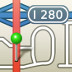

OpenStreetMap es un proyecto internacional con la meta de crear un mapa global libre. Por este motivo recolectamos información sobre calles, transporte público, rios, bosques, casas y mucho más.
Miles de personas, colectivos, organizaciones e instituciones públicas así como privadas colaboran desde todo el mundo. En Nicaragua somos un grupo de personas interesadas en mapeo, tecnologías y con el simple deseo de mejorar nuestro entorno.
Para poder realizar este sitio hemos tomado una gran cantidad de resultados colaboración global:

En conjunto mapeamos el transporte urbano colectivo de Managua y creamos una aplicación web confortable

Conocerdores del mercado y los que lo quieren ser, mapeamos el mercado mas grande de Centroamerica.

Respondiendo la necesidad local de direcciones en Centroamerica, propusimos un manjeo adecuado en OpenStreetMap, y ahora estanmos marcando los puntos relevantes.
OsmAnd
 |
|
OpenMaps
|  |
|
Mapa ruteable de todo Centroamerica y el Caribe, basado en datos generados a partir de OpenStreetMap, para dispositivos GPS Garmin.
¡Lo sentimos! En este momento no hay eventos anunciados. Vuelva pronto para saber de más eventos o siganos en Facebook.